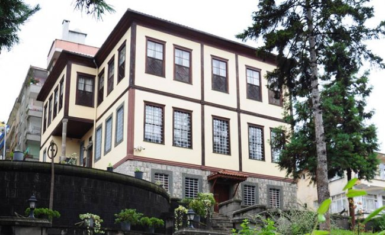
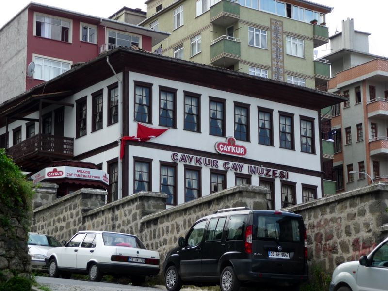
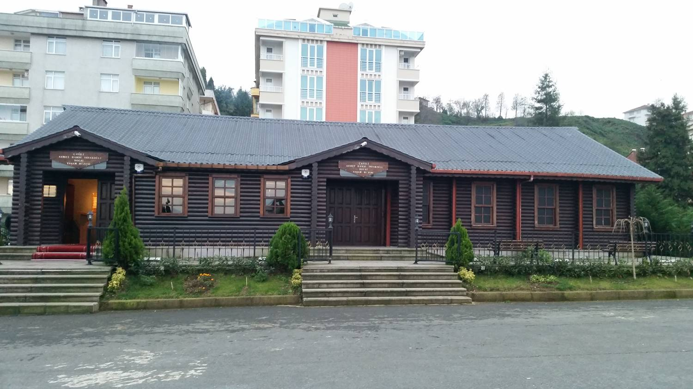

Rize Müzesi, Rize Etnoğrafya Müzesi, Tuzcuoğlu Konağı ya da bilinen adıyla Sarı Ev, Rize merkezdeki Piriçelebi Mahallesi’nde 19. yüzyıl sivil mimari örneği olarak 19. yüzyılda inşa edilen ve 27 Haziran 1998 yılından beri hizmet veren bir müzedir.
Çay-kur, Bölge, Ülke ve Dünyadaki çay kültürünü oluş-turduğu çay müzesinde sergileyecek. Başbakan Erdoğan tarafından açılışı yapılacak çay müzesinde paha biçi-lemeyecek eşyalar yer alıyor.Bir ilke daha imza atan Çay-kur, tarihi öneme sahip olacak Çay müzesini hayata geçiriyor. Cumhuriyet meydanı Müze müdürlüğü yanındaki tarihi iki katlı Rize evini müzeye dönüştüren Çay-kur, burada Çay imalatında kullanılan aletlerin sergilendiği çay teknoloji müzesi ile bölge,ülke ve Dünyadaki çay içme ve demleme tekniklerinin yer aldığı çay kültürü müzesi oluşturdu.
Ahmet Hamdi İshakoğlu’nun vasiyeti üzerinde çocukları Mustafa Metin, Faruk İhsan, Ayşe Yasemin Morgül İshakoğlu tarafından yaptırılan müze binası tamamen ahşap malzemeler kullanılarak inşa edilmiştir.
